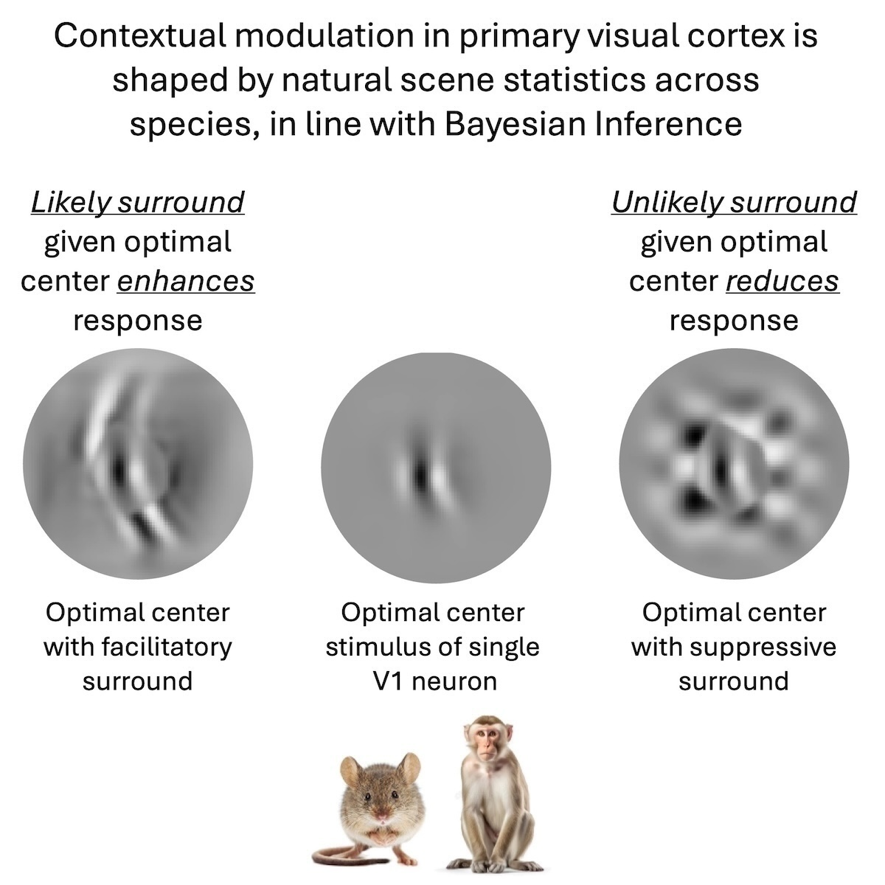

Understanding how the brain sees.
Senior Research Scientist at Stanford Medicine. Group Leader at the Enigma Project.
I combine large-scale neuronal recordings with AI tools to study the fundamental principles of visual information processing — from the retina to the cortex, in mice and primates.
A new paper in Neuron
Statistics of natural scenes shape contextual modulation in the visual cortex
How does visual context shape neuronal responses to local features? We show that surround modulation in primary visual cortex neurons reflects how well context matches the optimal local feature under natural scene statistics — probable continuations facilitate, improbable ones suppress — consistent with Bayesian inference leveraging prior knowledge of the visual world.
